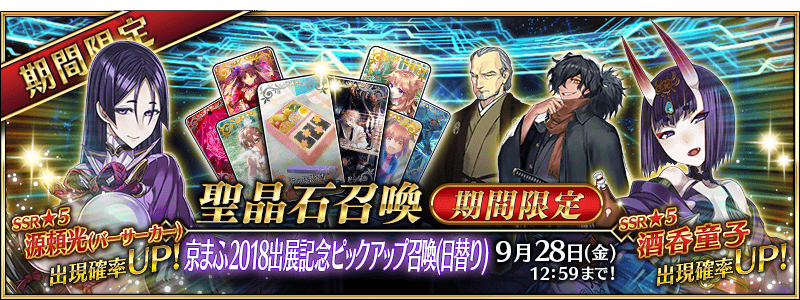
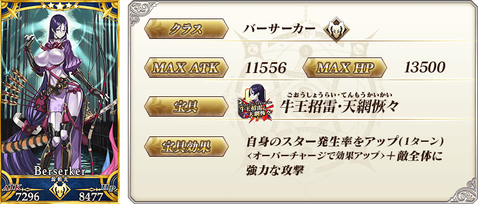
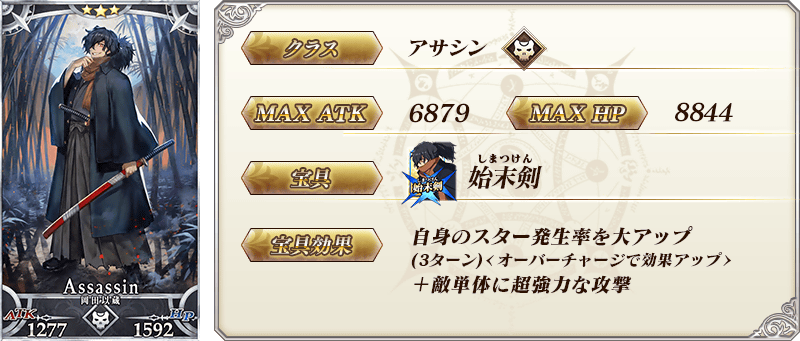
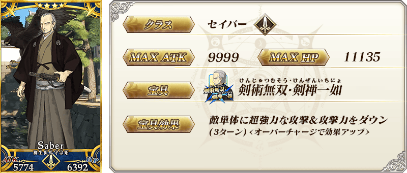
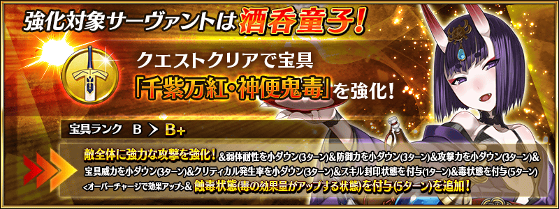

◆「京漫展2018出展記念Pick Up召喚(每日交替)」期間◆
期間:2018年9月14日(五) 17:00～9月28日(五) 11:59
為了記念在2018年9月15日(六)・9月16日(日)舉辦的「京都國際漫畫・動畫展2018」的出展，舉辦「京漫展2018出展記念Pick Up召喚(每日交替)」。
本次是從穿日式服裝Servant中以期間限定「★5(SSR)酒吞童子」「★5(SSR)源賴光(Berserker)」以每日交替Pick Up，「★4(SR)柳生但馬守宗矩」「★3(R)岡田以藏」常駐Pick Up！
※酒吞童子、源賴光(Berserker)、岡田以藏在Pick Up期間結束後不會追加到故事召喚。
※柳生但馬守宗矩在Pick Up期間結束後仍會在故事召喚被抽出。
※Pick Up期間中，柳生但馬守宗矩就算通過亞種特異點Ⅲ前也能入手。
※請注意「京漫展2018出展記念Pick Up召喚(每日交替)」做為每日交替，酒吞童子、源賴光(Berserker)就算是Pick Up期間中也有不會被抽出的日子。
※請注意岡田以藏不會從友情點數召喚被抽出。
詳情請在聖晶石召喚畫面左下的召喚詳細確認。
Pick Up期間中，期間限定Servant、Pick UpServant的出現機率提升！
10次召喚中確定1張★4(SR)以上和確定1位★3(R)以上的Servant！
※確定★4(SR)以上包含Servant和概念禮裝。
| 每日交替Pick Up期間 | 每日交替Pick Up內容 |
|---|---|
| 9月14日(五) 17:00～ 9月16日(日) 22:59 |
酒吞童子 源賴光(Berserker) |
| 9月16日(日) 23:00～9月17日(一) 22:59 | 酒吞童子 |
| 9月17日(一) 23:00～9月18日(二) 22:59 | 源賴光(Berserker) |
| 9月18日(二) 23:00～ 9月21日(五) 22:59 |
酒吞童子 源賴光(Berserker) |
| 9月21日(五) 23:00～ 9月23日(日) 22:59 |
酒吞童子 |
| 9月23日(日) 23:00～ 9月25日(二) 22:59 |
源賴光(Berserker) |
| 9月25日(二) 23:00～ 9月28日(五) 11:59 |
酒吞童子 源賴光(Berserker) |
※請注意會以每日交替變更Pick Up的Servant。


※上述「★5(SSR)酒吞童子」的卡面為靈基再臨第2階段的圖片。


※上述「★5(SSR)源賴光(Berserker)」的卡面為靈基再臨第2階段的圖片。




※上述「★4(SR)柳生但馬守宗矩」的卡面為靈基再臨第2階段的圖片。

※上述介紹Servant「★5(SSR)酒吞童子」的立繪為靈基再臨第2階段。


※上述介紹Servant「★5(SSR)源賴光(Berserker)」的的立繪為靈基再臨第2階段。

強化酒吞童子能力的特別關卡「Servant強化關卡」做為新常駐追加。
不僅進行對象Servant的強化，也可獲得聖晶石做為關卡通過報酬。
※請注意Servant強化關卡沒有冒險部份。
◆追加時間◆
2018年9月14日(五) 17:00～
◆參加條件◆
所持有的強化對象Servant，必須使其最終再臨。
※未持有對象Servant的話，不會出現關卡。
※關卡沒有舉辦期限。

介紹酒吞童子、源賴光(Berserker)、柳生但馬守宗矩、岡田以藏的寶具演出！
在「Fate/Grand Order」官方網站內的公告中，公開了「★5(SSR)酒吞童子」「★5(SSR)源賴光(Berserker)」「★4(SR)柳生但馬守宗矩」「★3(R)岡田以藏」的寶具演出。敬請確認。